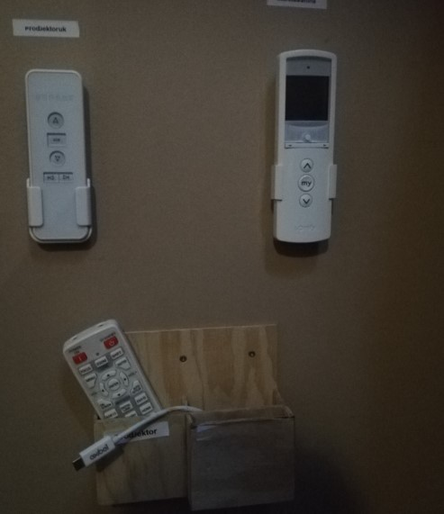
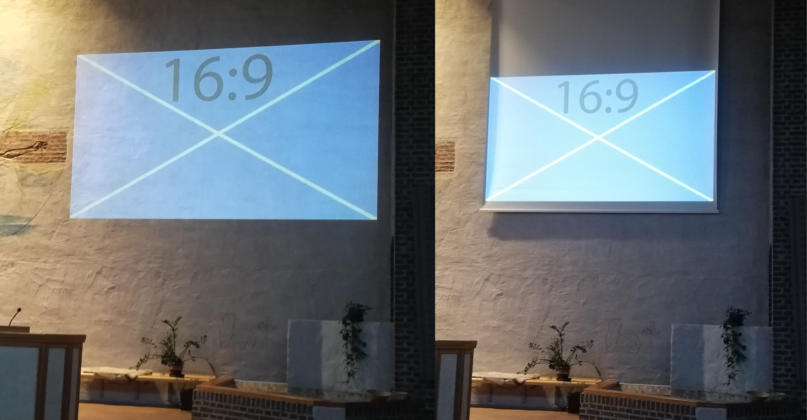
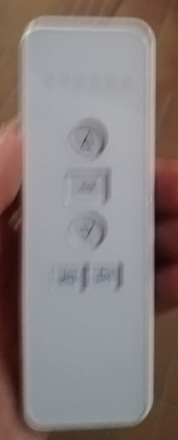

Översikt
Kyrksalens projektionssystem består av en projektor, en trådlös sändare och en projektionsduk. Kyrksalen har också mörkläggningsgardiner som jag tar med på den här sidan. All lös utrustning är inlåst i det lilla skåpet till vänster om mixerbordspulpeten.

Projektionsduken

Det finns en projektionsduk som kan hissas ner längst fram i kyrksalen. Den brukar dock inte användas eftersom det går väldigt bra att projecera direkt på väggen och att man kan ha större bilder. För att få ner projektionsduken används dess fjärrkontroll som finns i det lilla skåpet till vänster om mixerbordspulpeten.

Tryck på neråtpilen för att rulla ut duken och tryck på uppåtpilen för att rulla in duken. Duken stannar automatiskt när den är helt in- och utrullad men om du vill stanna den i ett annat läge trycker du på mittenknappen.
Sätta på och stänga av projektorn
Projektorn styrs med sin fjärrkontroll som är i det lilla skåpet till vänster om mixerbordspulpeten. För att sätta på projektorn trycker man på "POWER ON" knappen. Projektorn är väldigt känslig för riktning av fjärrkontrollen. Det fungerar bäst om man står framför projektorn och siktar mot linsen på framsidan av projektorn.
För att stänga av projektorn trycker man på "STANDBY". Då dyker det upp ett fönster i projektionsbilden där man ska bekräfta att man vill stänga av projektorn. Navigera till rätt alternativ med pilarna och tryck "ENTER".